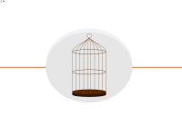

Qui n'a jamais rêvé d'avoir, après son home cinéma (Dolby Surround 7.1 avec écran géant 16/9 et lecteur blu-ray), un home futuroscope (avec Photoshop, THE GIMP, un appareil photo numérique ou Blender, votre vieille bécane et votre écran 800x600 minuscule :-° ) ?
Le tutoriel qui suit est là pour vous. Il vous montrera différentes façons de créer des images en 3D ainsi que l'histoire de la stéréoscopie. Le tout avec des exemples et des applications à l'appui pour vous aider à mieux comprendre.
Le but de ce tutoriel est d'expliquer le mieux possible tous les mécanismes vous permettant de voir en 3D. Grâce à cela, vous comprendrez mieux les manipulations effectuées lors du reste du cours. Ce tutoriel est entièrement théorique.
Tout simplement parce que nous avons deux yeux ! :) Explications : un œil ne voit qu'une image en deux dimensions, vous pouvez d'ailleurs faire ce test très classique. Demandez à quelqu'un de prendre un crayon, fermez les yeux, votre partenaire placera alors le crayon devant vos yeux à une distance quelconque. N'ouvrez qu'un œil et essayez d'attraper le crayon. Pas si facile ! ;)
Nous venons de démontrer qu'un seul œil ne voit qu'en deux dimensions. Maintenant pourquoi deux yeux nous permettent de voir en trois dimensions ? C'est en réalité parce que nous percevons deux images, une capturée par chaque œil. Et bien sûr ces deux images sont différentes. Si vous fermez un œil puis l'autre, vous verrez que certains objets bougent ou pivotent (en fait, ils pivotent et bougent tous, mais de manière plus ou moins perceptible).
Voici un schéma pour vous montrer la différence de capture d'image :
Maintenant que nos images sont capturées, elles sont directement envoyées à traiter à votre cerveau. Que va faire celui-ci ? Il va tout simplement, à partir de la différence des deux images (différence de rotation, de déplacement, etc. des objets), calculer une troisième dimension. Et il se trompe rarement ! (certaines illusions d'optiques jouent cependant là-dessus)
Donc, pour créer une image en 3D, il nous faut deux images différentes et un cerveau. Cependant il nous reste une contrainte, chaque image différente doit être vue par un et seulement un seul œil, si les deux la voient, le cerveau « comprend » la supercherie et traite les images comme il devrait le faire « normalement ».
Vous vous en doutez, c'est cette contrainte qui va nous poser des soucis.
On sait donc qu'il faut que chaque œil envoie une image différente au cerveau pour que celui-ci crée la 3ème dimension.
Mais... Mon écran affiche en 2D et je ne vois pas comment faire pour que mes yeux voient une image différente ! :'( Alors, comment ça marche ?
Bah avec deux écrans évidemment... :-° Le plus gros problème, c'est de transformer votre source en deux dimensions en images valables pour votre cerveau, comme sur le schéma ci-dessous :
Pour imposer une image par œil, il existe de nombreuses techniques, vous devez d'ailleurs en connaitre certaines sans peut-être même vous en rendre compte. Nous allons enfin rentrer dans le vif du sujet, puisque la résolution de ce problème sera la partie principale de ce tutoriel.
Ce chapitre était peut-être un peu bateau (et court :p ) mais il était plus que nécessaire. Les points sur les i sont désormais mis. Grâce à ce chapitre, vous comprendrez sans effort à quoi servent les opérations effectuées par la suite.
Si vous êtes bon élève, vous avez compris le fonctionnement de la vision en trois dimensions (sans compter que vous avez déjà peut-être vu ça en physique ou dans C'est pas sorcier :p ). Néanmoins, cela nous dit toujours pas comment faire une impression 3D depuis une surface plane, c'est-à-dire nos fameuses « images en 3D ».
Nous aborderons dans ce chapitre la 3D la plus simpliste, elle mettra en application ce que nous avons énoncé au chapitre précédent.
Souvenez vous, au chapitre précédent, nous vous avons dit que deux images côte à côte ne suffisaient pas. En fait, cela dépend :D , démonstration :
Essayez de loucher sur ces deux images pour les superposer.
Alors, vous y arrivez ? *smilz (chuchote) : non* Si oui, alors vous remarquez que l'image semble ressortir, vous avez là une stéréoscopie de base.
Stéréoscopie ?
On appelle stéréoscopie l'ensemble des images tridimensionnelles (3D), nous utiliserons le terme de stéréoscopie pour le cas plus particulier des images dites parallèles. (les deux « règles » ci-dessus)
Enfin un peu de pratique ! (avec un soupçon de théorie :-° )
Que l'on se mette bien d'accord, nous parlons de la stéréoscopie dite parallèle comme dit plus haut, elle est appelée ainsi (pas forcément par tout le monde) car elle consiste à mettre deux images côte à côte (une image correspondant à ce que voit l'œil gauche et une autre correspondant à ce que voit l'œil droit). Il suffit alors d'un petit exercice visuel pour voir la-dite image en 3D.
Petit intermède ludique ;) : Cliquez sur une des images pour l'agrandir
Vous avez réussi ? Il y a de fortes chances que non, aussi nous allons vous donner quelques conseils. Voici deux techniques décrites étape par étape qui devraient vous permettre de faire cela beaucoup plus facilement. Malgré ces techniques, certaines personnes n'arrivent pas à loucher, nous déclinons toute responsabilité en cas de maux de tête ou de vertiges :-° . smilz n'y arrive toujours pas :) .
Première technique
Agrandissez l'image
Approchez-vous de l'écran jusqu'à coller votre nez sur la bande noire séparant les deux images
Éloignez-vous petit à petit de l'écran en essayant de regarder vers le bas. Lorsque les deux images sont superposées, arrêtez vous, les images se bloquent d'elles-mêmes.
Deuxième technique
Baissez les yeux pour regarder le bout de votre nez.
Inclinez la tête vers l'arrière pour avoir l'écran avec les images en arrière plan.
Essayez de "déloucher" progressivement (c'est l'étape la plus dure) jusqu'à ce que les images se superposent, elles se bloquent d'elles-mêmes.
Qu'est-ce qui se passe concrètement ?
schéma montrant la superposition faite par le cerveau. En superposant les deux images, on met le cerveau dans une « impasse », en l'obligeant à superposer deux images différentes, le cerveau ne sait pas comment l'interpréter alors il « invente ». Il trouve comme meilleure solution de créer un axe Z (la profondeur).
Certaines personnes, en regardant les images en stéréoscopies parallèles ci-dessus, ont sûrement eu la mauvaise surprise de voir le pot de fleur passer derrière le muret :D . Ces personnes-là « souffrent » de parallélisme.
C'est grave docteur ?
Pas de panique ;) . C'est juste une façon de dire que leur vision diverge au lieu de converger. Concrètement, lorsque vous superposez les images en suivant les techniques que nous vous avons données, vous êtes sensés loucher. Or quand on louche, on croise notre regard comme si nous regardions un objet plus près de l'œil. Les personnes dont nous parlions au-dessus font le contraire, elles organisent leur regard comme si elles regardaient un objet bien derrière. C'est ce qu'on appelle la vision parallèle, par opposition à la vision dite croisée.
Vision croisée puis vision parallèle
Comme nous sommes tolérants voici donc retournées les images précédentes. (Bien sûr on ne peut rien faire pour cette sous-classe d'hommes n'arrivant pas à loucher dont fait partie smilz... :-° ) Cliquez pour agrandir
Sachez qu'il y a à peu près autant de personnes qui sont « parallélistes » que de « croiseurs », le choix de l'image croisée à titre d'explication est en fait une coïncidence lors de la création de l'image, ce qui arrange d'ailleurs tout le monde vu que Clemsip est un « croiseur ».
Vous remarquerez que nous n'avons pas fait d'explication pour créer ces images, c'est tout simplement parce que ce n'est pas bien sorcier (il suffit de mettre les deux images à côté). L'annexe « Faire de bon anaglyphes » suffit largement (sous-partie « Prise d'image » , la prise d'image pour les stéréoscopies simples et les anaglyphes est la même).
Maintenant nous allons voir dans les prochains chapitres d'autres méthodes pour simuler la 3D, qui nécessiteront plus de matériels et un peu plus de pratique mais qui sont moins « libres » pour l'utilisateur , supprimant donc les soucis de parallélisme et de croisement.
Vous avez tous déjà rencontré les célèbres images « bleues et rouges », elles sont faciles d'accès (peu couteuses) et facile à faire, elles ne sont cependant pas des plus efficaces. (Toutefois plus que la stéréoscopie de « base » - parallèle - ainsi que toutes les autres méthodes que nous mettrons en pratique dans ce cours).
Sous le terme d'anaglyphe se cachent les fameuses images « bleues et rouges ». Elles ne deviennent tridimensionnelles que si on utilise les lunettes adaptées. Le principe de ces images est de donner une image par œil (comme pour toutes 3D), les lunettes servant de filtres pour empêcher chaque d'œil de voir l'image qui ne lui est pas destinée. Ainsi, le filtre rouge n'affichera pas le rouge de l'image et le filtre cyan (car ce n'est pas du bleu, mais du cyan) n'affichera pas le cyan (c'est-à-dire le bleu et le vert), la lumière (couleur) est en faite « absorbée » par le filtre.
Pour vous en convaincre, faite l'expérience suivante. Prenez vos lunettes et éloignez les de vos yeux de façon à ce que les deux yeux puissent voir à travers le même filtre. Regardez alors l'anaglyphe ci-dessous.
- « Oh c'est magique, on ne voit plus qu'une image ! o_O »
Et oui et le même processus s'applique pour chaque œil. Donc finalement, chaque œil a l'image qui lui est destinée. Et vu qu'une des deux images assemblées ne contient que du rouge et l'autre ne contient que du vert et du bleu (vous verrez plus bas qu'une image bien constituée contient trois couches : rouge vert et bleu), une fois reconstituée par le cerveau l'image devrait avoir des couleurs normales, en théorie... Le cerveau calcule alors normalement l'axe Z (la profondeur).
Tout semble parfait, malheureusement le cerveau va faire un amalgame de deux images qui ne possèdent pas la même coloration. Il ne sait alors pas quoi choisir comme référence, d'où le clignotement des couleurs quand on met les lunettes. Il finit par s'atténuer progressivement à force que le cerveau corrige les erreurs, en contre partie d'une sacrée migraine. Les anaglyphes c'est très bien, mais malheureusement pas parfait… Dans la IIème partie, nous verrons d'autres techniques plus efficaces mais nécessitant beaucoup de moyens.
Ne vous inquiétez pas, la manipulation n'est pas très complexe, cependant on ne peut pas la deviner. ;)
Couches sous Photoshop/GIMP Tout d'abord chassez de votre esprit toute notion de calque, en effet la base d'un bon anaglyphe est d'utiliser les couches et non pas de bêtes calques saturés en cyan ou en rouge.
Pour comprendre ce qu'est une couche il faut se souvenir (ou apprendre) le fonctionnement des couleurs dans une image numérique.
Citation : Wikipedia
Il existe plusieurs modes de codage informatique des couleurs, le plus utilisé pour le maniement des images est l'espace colorimétrique Rouge, Vert, Bleu (RVB ou RGB - Red green Blue). Cet espace est basé sur une synthèse additive des couleurs, c'est-à-dire que le mélange des trois composantes R, V, et B à leur valeur maximum donne du blanc, à l'instar de la lumière. Le mélange de ces trois couleurs à des proportions diverses permet de reproduire à l'écran un part importante du spectre visible, sans avoir à spécifier une multitude de fréquences lumineuses.
Vous commencez à comprendre ? ;) Au lieu de superposer des calques qui ne géreraient pas les couleurs et la transparence correctement, il vaut mieux mélanger les couches de plusieurs images, une couche ne contenant que la couleur brute et de la transparence (alpha) suivant la présence de la couleur.
II. Réalisation
1ère étape.
Ouvrez vos deux documents sous Photoshop ou THE GIMP, organisez les images de manière à ce que l'image de gauche soit à gauche et l'image de droite… à droite (ce n'est pas capital mais ça évite de se perdre dans les fichiers ;) ).
Ouverture des fichiers
2nd étape.
De loin la plus importante, sélectionnez l'image droite et faite CTRL + A (ou CMD + A sur mac) puis sélectionnez le canal rouge, faite alors CTRL + C (copier) et sélectionnez le canal rouge de l'autre image et faite CTRL + V (coller). On réécrit alors le canal rouge de l'image de gauche avec celui de l'image de droite.
Sélection du canal rouge
3ème étape.
Et voila vous avez fini :) , vous n'avez plus qu'à mettre vos lunettes et à admirer le travail.
Montage anaglyphique réussi
Hey ! Tu te moques de nous ! C'est tout moche et c'est pas en 3D ! :colere2: C'est quoi cette histoire ?
C'est normal possible. C'est certainement que vous avez monté votre image à l'envers, dans ce cas, inversez le canal rouge ; si vous avez beau inverser les images dans tous les sens et que c'est toujours aussi moche (voir même plus :-° ), essayez de bidouiller l'image en déplaçant le canal rouge avec l'outil
(
) jusqu'à obtenir un résultat convenable mais attention, toutes les images ne fonctionnent pas, elles peuvent ne pas être assez bien prises (voir annexe « Faire de bons anaglyphes »). Sous Photoshop, soyez prudent durant le « bidouillage », on ne peut pas voir ce que l'on fait en temps réel, il faut tâtonner ;) .
Eh oui, on ne va pas s'arrêter en si bon chemin ! Vous savez faire des anaglyphes mais vous n'avez pas d'images pour manipuler ?
Comme nous sommes très gentils, nous allons donc vous proposer des exercices ! :p
Nous les avons classés en 3 niveau de difficulté selon la quantité de « bidouillages » à faire :
Exercices
Facile
Il suffit d'appliquer la technique bêtement mais cela permet de se familiariser avec les commandes. Téléchargement : ici
Moyen
Ici ça se corse, les images bêtement obtenues en appliquant la méthode sont horribles et explosent les yeux
, il faut alors les vérifier et les « bidouiller » en déplaçant le canal droit. Cela reste tout de même possible. :) Téléchargement : ici
Difficile
Et le top du top ultime, les images sont nulles et il faut bidouiller en profondeur, creuser pour extraire ne serait-ce qu'un pixel d'image valable. Bonne chance... Téléchargement : ici ...
Correction
Pas si facile que ça tout compte fait, surtout que « bidouiller » à l'aveuglette n'est pas facile. Il y a une solution pour vous faciliter la vie sous Photoshop.
La fenêtre de navigation de Photoshop, menu Fenêtre --> Navigation, vos actions sont maintenant visibles en temps réel, agrandissez la fenêtre pour mieux vous y retrouver.
Et voici les images que vous auriez dû obtenir (plusieurs variantes sont évidemment possibles, nous présentons ici un exemple de réglage qui nous parait être le plus convenable que nous ayons obtenu, sachant qu'il ne faut pas perdre de vue que des mauvaises images donneront une mauvaise image. On ne fait pas un beau tableau d'un mauvais paysage :-° ) :
Les anaglyphes sont efficaces mais leur utilisation prolongée est désagréable. Nous aborderons prochainement des techniques d'« impression 3D » qui corrigent les maux de tête qui peuvent être causés mais qui ont aussi d'autres défauts, comme le matériel technique nécessaire, extrêmement couteux. Ce sont les méthodes utilisées dans les parcs d'attractions comme le Futuroscope ou Vulcania, par exemple.
Qu'est-ce que l'auto-stéréoscopie ? Haha ! Vous aimeriez bien le savoir ? Alors ? Prêts à franchir la dernière marche de votre merveilleux voyage dans les images tridimensionnelles ?
La base de l'auto-stéréoscopie se trouve dans un phénomène appelé persistance rétinienne. C'est entre autres lui qui permet de voir le mouvement.
Et c'est quoi la persistance rétinienne ?
La persistance rétinienne fait que tous ce que l'on voit reste « imprimé » 50 millisecondes sur notre œil. Un exemple simple et facile à réaliser consiste à prendre une plaque et à y coller d'un côté un oiseau par exemple et de l'autre côté une cage. On accroche un élastique de chaque côté puis on les enroule jusqu'à ce qu'ils soient tendus.
Il faut alors relâcher le tout. La plaque se met à tourner montrant en alternance l'oiseau puis la cage à grande vitesse. Au final on voit un oiseau dans la cage. Ci-dessous une version informatique de cette application. Et sur les côtés les images de référence afin de vous laisser essayer. Une cageUn oiseau L'oiseau dans la cage.
Le cerveau se retrouve obligé de superposer les deux images ce qui, dans le cas de deux images parallèles nous ramène à un cas de stéréoscopie classique où le cerveau doit créer un axe Z pour superposer les deux images.
En fait, pour être plus clair, si on alterne assez vite l'image œil gauche et l'image œil droit, vous verrez l'image en 3D !
En théorie nous ne devrions même pas voir les deux images sources, juste le rendu final. Or vous vous en doutez bien, si nous disions « en théorie », c'est qu'il y a un « mais ».
En effet, vous ne verrez que très peu d'images qui alterneront assez vite car ce procédé ne fonctionne qu'avec des images très proches voir même presque similaires. Il faut donc tricher en bernant le cerveau d'une autre façon. La prise d'image parfaite étant quasiment impossible, on fait appel à une autre manière qu'a notre cerveau de voir de la 3D.
Le cerveau a environ 3 techniques pour détecter le relief. Le relief (vision naturelle des volumes), la mise au point (un flou apporte de la profondeur), et le mouvement (un film apparaît avec une profondeur apportée par le mouvement, les plans pris par hélicoptère en sont un parfait exemple).
Clique pour voir l'auto-stéréoscopieVous avez compris que nous allons utiliser le mouvement. Mais pas n'importe lequel, nous allons utiliser un mouvement de rotation pour faire notre effet. ne vous inquiétez pas, il n'y aura pas besoin de faire un tour complet, seules deux images (parfois 3 ou 4) seront nécessaires (ce qui nous ramène à la prise des images, cf l'annexe).
Par l'alternance de ces deux images (assez rapide tous de même, comptez environ 1 image toutes les 100 millisecondes), le mouvement de rotation créera une impression de relief.
Néanmoins vous pouvez noter que, quoi qu'on en dise la 3D reste tout de même du bricolage par rapport aux réactions du cerveau (les écrans à balayage stéréoscopique sont ce qui se fait de mieux dans le commerce, nous en reparlerons dans cette annexe ;) ).
Pour faire des images animées, le format le plus adapté est le gif. Nous avons donc trouvé un logiciel multi-plateformes, léger et assez puissant pour créer ces images, en effet nous pensons qu'une usine à gaz telle Photoshop ou The GIMP n'est pas forcément nécessaire pour une si petite manipulation. Nous utiliserons à la place Gifted Motion.
Téléchargement et installation
Ce programme fonctionne avec Java qu'il faut donc installer. Le téléchargement de Java se fait sur cette page (sachez toutefois qu'il y a de fortes chances que Java soit déjà présent sur votre ordinateur).
Sous Windows
Téléchargez l'installateur Windows et lancez l'application, le reste de la manipulation ne doit pas vous être inconnu.
Sous les Debian-Based (Ubuntu, Kubuntu...)
Vous pouvez sois installer le paquet RPM ou le .bin de Java mais il existe aussi des paquets dans les dépôts. Donc un petit sudo apt-get install sun-java6-bin sun-java6-jre sun-java6-plugin suffit, les paresseux peuvent aussi utiliser ce lien .
Sous Mandriva, SuSE...
Téléchargez et installez le paquet RPM présent sur le site de Java.
Sous Linux (Autre)
Vous pouvez soit télécharger la tarball et suivre les instructions ou bien utiliser le binaire (.bin) fourni par Java.
Sous Mac
Normalement Java est installé par défaut sous OS X.
Maintenant que vous avez Java d'installé, il faut télécharger le logiciel de création de gif.
Le logiciel se présente sous la forme d'une archive .jar que vous pouvez télécharger ici ou depuis sa page de téléchargement. Il suffit ensuite de placer l'archive non décompressée dans le dossier de votre choix puis de la lancer avec jre.
Pour linux, faites dans la console java -jar giftedmotion-1.13.jar, vous pouvez aussi régler votre système pour lancer Java directement à l'ouverture d'un jar. Sous Windows, l'amalgame se fait normalement à l'installation de jre, si ce n'est pas le cas, Clic droit sur le fichier .jar > Propriétés > S'ouvre avec > Prenez Java (Java runtime environnement).
Utilisation
L'avantage de ce logiciel est qu'il est très rapide à prendre en main. Voyons rapidement à quoi il ressemble. Normalement à l'ouverture vous devriez avoir une fenêtre quasi-vide (quand on vous parle d'un logiciel simple :p ).
Ouvrez une image avec le bouton « dossier » en bas du logiciel, vous devriez avoir un avertissement, nous n'en prendrons pas compte pour l'instant, nous allons juste étudier l'interface.
Le menu de base pour enregistrer et avoir de l'aide
L'aperçu du gif en cours
Le nom des images qui composent le gif
Les paramètres des images (Temps d'apparition, Type de balayage, etc)
La barre d'outils (Ouvrir, Export Settings, Play, Pause et Enregistrer)
Pour créer un gif de toute pièce il suffit de faire File > Open ou bien par le bouton précédemment cité, et de sélectionner soit un dossier d'images soit une ou plusieurs images (à l'aide de Shift (majuscule) ou Ctrl).
Une fois les images ouvertes notre travail se situe dans la partie 4. En effet, c'est la persistance rétinienne qui nous intéresse, et elle dure environs 50 milli-secondes, il s'agit donc ici de baisser le paramètre Time à 50 et Dispose à None pour avoir un balayage classique qui use moins de configuration. N'oubliez pas de cocher « Apply change to all frames », pour que les modifications soit appliquées à chaque image.
Faites un aperçu alors de votre auto-stéréoscopie avec le bouton « Play ». Normalement l'effet 3D fonctionne :) Mais si par malheur ça ne va pas il existe plusieurs solutions, essayez de varier Time pour voir ce que ça donne, sinon sachez que contrairement aux anaglyphes ici on ne peut pas « bidouiller » les images, il faut donc qu'elles soient très proches et parfaitement réalisées (ou presque). Évidemment tous les bons conseils sont dans l'annexe :)
NB : Un bug assez récurent se présente lors de l'enregistrement en Gif qui rajoute des tâches transparentes dans les images. Il peut être réglé dans la fenêtre Export Settings (barre d'outils) qui par défaut doit ressembler à ça :
L'option qui nous intéresse c'est Transparency color. Cliquez une fois dessus pour obtenir comme dans la capture suivante, normalement tout devrait bien se passer mais attention, vous devrez le refaire à chaque image ;) .
Le problème, vous l'avez peut-être compris, est que Gifted Motion donne une couleur qu'il transformera en transparent, or il y a une infime chance pour que ladite couleur soit dans votre image et en altère tout le rendu, en faisant ce qu'on vient de faire, on désactive la transparence pour le bien de tous.
Pour les amoureux de Photoshop, je vous renvoie à cet excellent tutoriel de ly01 : Créer un Gif animé. Pour les GIMPiens chevronnés, un très bon tuto vous expliquera ce que vous devrez savoir sur la création de gif avec GIMP sur Infetech : Gif animé simple
Bon ben c'était pas si dur que ça finalement. Juste un peu de technique à prendre pour les images de base. Ça tombe bien, une annexe est ici pour vous donner quelques tuyaux.
À présent la création d'image en 3D n'a plus de secrets pour vous. Pour choisir les meilleures images passables en 3 dimensions, sachez que seule l'habitude vous aidera. Mais vous n'avez pas fini votre fascinant voyage dans l'univers de la 3D, il vous reste encore les films à découvrir.
Cette annexe a pour but d'expliquer quelques particularités lors de la conception d'anaglyphe. Si nous ne l'avons pas incluse dans le cours « principal », c'est parce que nous allons sortir un peu du domaine droit et rigide de la théorie pour aller plus vers la pratique, où le chemin est semé d'embuches ;) . Cet annexe est en réalité là pour vous donner des conseils pratiques tout au long de la création d'anaglyphe. Nous considérons que vous savez ce qu'est un anaglyphe et que vous savez en assembler.
Si vous ne savez pas ce qu'est un anaglyphe ou que vous ne savez pas les assembler, allez consulter le cours sur la création d'anaglyphe.
Pour cette annexe nous fonctionnerons sur le principe du pas-à-pas. Nous allons donc ensemble refaire cet anaglyphe :
C'est ici la partie la plus déterminante de votre anaglyphe. En effet pour que votre anaglyphe soit réussi, il faut déjà que votre objet/sujet ait lui même un axe Z (la profondeur) très fort, permettant de donner une réelle impression de 3D (une photo de mur de face n'a pas beaucoup d'intérêt…)
Sur le schéma si contre, nous voyons différents cas de scènes choisies pour être retranscrites en 3D. Chacune a une profondeur (axe Z) mais toutes n'ont pas ce que nous appelons la valeur anaglyptique (c'est un terme austère mais il a le mérite d'avoir la classe d'être clair).
Viennent d'abord les deux premières qui sont parfaitement potables pour être des anaglyphes mais par habitude je prendrai la seconde en priorité, car l'effet 3D sera plus fort, ou en tout cas plus facile. C'est dû à la multitude d'objets qui eux ont du volume.
Mais ne vous y trompez pas, la première et parfaitement viable d'un point de vue anaglyptique. À condition bien sur que l'axe Z de cette dernière (en l'occurrence ici de son unique objet) ne soit pas trop court.
La dernière en revanche a très peu de valeur anaglyptique du fait de son dernier objet qui est plat et dont on ne voit pas la distance par rapport à l'autre, ce qui fait toute la différence avec le deuxième cas de figure. (Pourquoi ? Nous verrons cela lors de l'étude de la technique de prise d'image.)
J'ai pris ici comme appui des formes géométriques simples mais dans la nature on peut facilement retrouver des équivalents de ces volumes qui aident à choisir ses compositions.
Pour en revenir à notre fil conducteur, analysons le sujet de l'image (ou sa composition 3D, c'est-à-dire sa composition par rapport au relief).
En simplifiant les formes nous voyons apparaitre en filigrane la situation de la scène 1. La profondeur est donc bien présente (et évidente) on peut donc contrôler les objets alentours. l'intérêt de contrôler les objets alentours est de vérifier deux choses :
Il faut être sûr que les objets alentours ou secondaires ne parasitent pas la 3D en faisant des situations compliquées ou en obstruant la vision de l'objet principal.
Il faut également vérifier que les objets alentours ne sont pas trop plats, qu'ils aient du relief. Autrement ils risquent de gâcher l'effet.
(La vérification 2 est secondaire et ne doit en aucun cas empêcher la prise de vue si le sujet est bon, néanmoins, si le sujet est tout juste passable elle peut être déterminante.)
Si on les applique à notre image, on constate que :
Les objets ne gênent pas la 3D. Seul les chaises pourraient mais leur position n'est pas trop gênante.
Les objets alentours ne renforcent pas l'effet mais le sujet est bon donc on n'en tient pas compte.
La composition est bonne, nous pouvons passer à la prise d'image.
Notre composition est bonne, il va maintenant falloir prendre des photos pour créer notre anaglyphe. La question est : mais comment prendre mes photos pour faire le mieux ressortir ma 3D ? Et surtout de façon agréable ? (Une excellente 3D générant de trop grosses migraines ne sert à rien...)
Eh bien pour être honnête, il n'y a aucune technique et on ne peut pas être sûr d'une image avant de l'avoir essayée. Néanmoins il y a des trucs pour s'aider et pour améliorer le nombre de bonnes images. Pour les comprendre il faut analyser la façon dont l'on voit. Pour cela je vous renvoie au schéma du premier chapitre. Cependant nous allons rajouter des informations :
Comme vous pouvez le voir, nous avons rajouté un centre (la croix) d'un cercle et 2 "rayons" (des demi-droites partant du centre) qui représentent les regards des deux yeux et leurs orientations ainsi que leur angle d'écartement. (Le regard se focalisant sur le point d'attention, cet angle varie avec la distance des yeux avec ce point)
Pour prendre nos images nous allons grosso-modo utiliser le même schéma. En reprenant notre anaglyphe on va placer un point d'attention, le considérer comme un centre et tracer le cercle correspondant. Cependant, l'angle d'écartement doit être fixe, c'est la seule différence avec notre regard. Donc si on applique tout ça :
On voit immédiatement où placer notre appareil photo et avec quelle rotation, notez que l'écartement s'agrandit si on s'éloigne du sujet. Et ce jusqu'à une certaine distance où l'écartement atteint environ 6cm, écartement des yeux à partir de laquelle il n'est plus nécessaire d'écarter à nouveau. Sauf pour des paysages très lointains où il peut être mieux de beaucoup écarter. (Bien entendu physiquement on ne voit pas exactement où et comment placer l'appareil mais en traçant les lignes ci-dessus mentalement cela peut permettre de se donner une idée et ainsi prendre de meilleures images.)
Les photos sont prises (#1, #2), il faut maintenant passer à l'assemblage.
Vient alors la grande partie qu'est l'assemblage, c'est cette partie qui va déterminer si vos photos sont correctes et l'aspect de votre 3D.
En effet si on analyse une image en 3D, on remarque que, grosso-modo les deux images (ici la rouge et la cyan) se rejoignent et se confondent en un point précis de l'image :
Le rectangle bleu met en valeur les deux parties, avant et après ce point, c'est une distinction très importante à faire, l'effet de 3D étant entièrement dirigé par ça.
Regardez le schéma ci-dessous :
Le point de divergence (la croix) sert de pivot pour la 3D, d'un côté, les objet ressortent, de l'autre, il s'enfonce d'ans l'écran. C'est très important de comprendre ça parce que votre anaglyphe devra absolument être calibré de façon :
A ne pas faire trop ressortir ou trop s'enfoncer pour que les images ne soient pas trop écartées (si les deux image sont trop écartées c'est désagréable pour le spectateur)
A varier les effets, un bon anaglyphe est un anaglyphe qui s'enfonce et ressort. L'effet 3D n'en est est que plus fort.
En décalant alors les images les unes par rapport aux autres vous pouvez vous même décider de l'emplacement de votre pivot. Même à l'étape de votre composition, gardez en tête le fonctionnement des images 3D pour faire de belles images.
Voilà, maintenant vous en savez autant que moi sur la création d'anaglyphe de la composition à l'assemblage. Comme dernière illustration de mes techniques (et surtout en petit bonus pour le plaisir des yeux), voici une petite dernière, essayez de repérer le point de pivot et la ligne d'écran ainsi que la composition pour vous entrainer ;) : Cliquez pour agrandir
Voilà. Ce tutoriel est déjà terminé et vous allez devoir retourner à votre fade univers en 2D. Nous espérons que notre apport en connaissances vous a été utile ou vous a du moins intéressé. :)
Pour ceux qui attendaient vraiment un home Futuroscope, nous avons aussi pour projet un tuto « Comment ajouter à votre chaise de bureau ou canapé des suspensions hydrauliques ». L'écriture risque cependant de prendre un certain temps... :p (Et on ne vous parle pas du temps que ça vous prendra à vous pour le finir ! :-° )
Pour toute réclamation, question ou remarque (à propos du tutoriel) vous pouvez MP clemsip ou MP smilz en précédant le titre de votre message du tag [3D]. Merci ! ;)
 Cliquez ici pour la version animée, mettant en valeur la différence des deux images.
Cliquez ici pour la version animée, mettant en valeur la différence des deux images.
{kind=link}
{kind=link}
{kind=link}
{kind=link}
{kind=link}
{kind=link}
{kind=link}
{kind=link}
{kind=link}
{kind=link}
{kind=link}
{kind=link}
{kind=link}
{kind=link}
{kind=link}
{kind=link}
{kind=link}
{kind=link}
{kind=link}
{kind=link}
{kind=link}
{kind=link}
{kind=link}
{kind=link}
{kind=link}
{kind=link}
{kind=link}
{kind=link}
{kind=link}
{kind=link}
{kind=link}
{kind=link}
{kind=link}